دليل الهوية البصرية • الإصدار ١٫٠ • ٢٠٢٦
Fruit Box
فاكهتك على مزاجك
القواعد الأساسية لاستخدام الشعار والألوان والخطوط والتطبيقات المطبوعة والرقمية، لتظهر العلامة طازجة وشهية ومتّسقة في كل مكان.
فاكهتك على مزاجك
القواعد الأساسية لاستخدام الشعار والألوان والخطوط والتطبيقات المطبوعة والرقمية، لتظهر العلامة طازجة وشهية ومتّسقة في كل مكان.
| الملف | JPEG (progressive)، RGB، 8-bit |
| الأبعاد | 767 × 717 px |
| مساحة الرسم الفعلية | ≈ 624 × 498 px |
| الخلفية | بيضاء صافية (#FFFFFF) — لا توجد شفافية |
| النوع | رسم نقطي (Raster) بتفاصيل تصويرية؛ لا توجد نسخة متجهية |
| أقصى طباعة جيدة | ≈ ٥٫٥ سم عرضاً بدقة ٣٠٠ نقطة/إنش، ≈ ١١ سم بدقة ١٥٠ |
تم فصل الشعار عن الخلفية البيضاء دون أي تعديل على الرسم، وتم إنتاج نسخة شفافة ونسخة للخلفيات الداكنة. الملف صغير نسبياً: يكفي للشاشات والمطبوعات الصغيرة، أما اللافتات والواجهات والطباعة الكبيرة فتحتاج إلى الملف الأصلي عالي الدقة من المصمم، أو إعادة رسم احترافية مطابقة للشعار.
صندوق مليء بالفواكه الطازجة، وكوب سموذي في قلبه.
تقوم فكرة Fruit Box على الوفرة والطزاجة: فواكه ملوّنة تحيط بكوب سموذي وردي، وشريط بني دافئ يحمل الاسم كختم جودة. الوعد بسيط: كل طلب يُحضَّر من فاكهة حقيقية، وفق ذوق العميل.
الشعار غني بالتفاصيل، لذلك تعتمد الهوية على مساحات هادئة وألوان مستخرجة من الشعار حتى يبقى الشعار نجم التصميم.
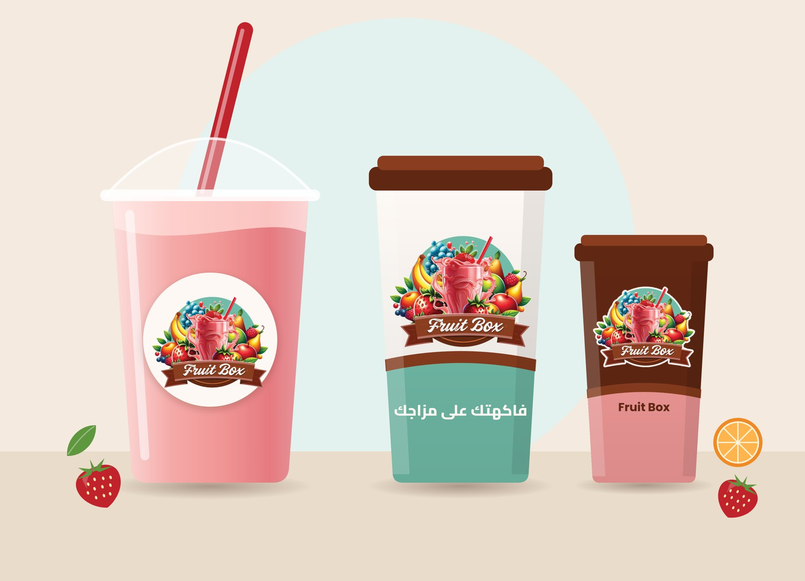
نتحدث عن الفاكهة كما هي: حقيقية، موسمية، مُحضّرة الآن.
صور وأوصاف تجعل العميل يتذوّق قبل أن يطلب.
لغة خفيفة وودودة، بدون مبالغة أو تهريج.
وضوح في الأسعار والمكوّنات ومواعيد التوصيل.
الشعار الأصلي كما هو.
تكوين الفواكه، كوب العصير، الألوان، الشريط البني وكتابة Fruit Box عناصر ثابتة لا تُعدّل ولا يُعاد رسمها ولا يُغيَّر ترتيبها.
| الملف المعتمد | fruitbox-logo-original-transparent.png |
| الأبعاد | 648 × 522 px • PNG شفاف |
| النسبة | 1.24 : 1 |
| الاستخدام | كل التطبيقات على خلفيات فاتحة وهادئة |
للخلفيات البيضاء والفاتحة
نفس الرسم مع إطار كريمي خارجي يفصله عن الخلفية
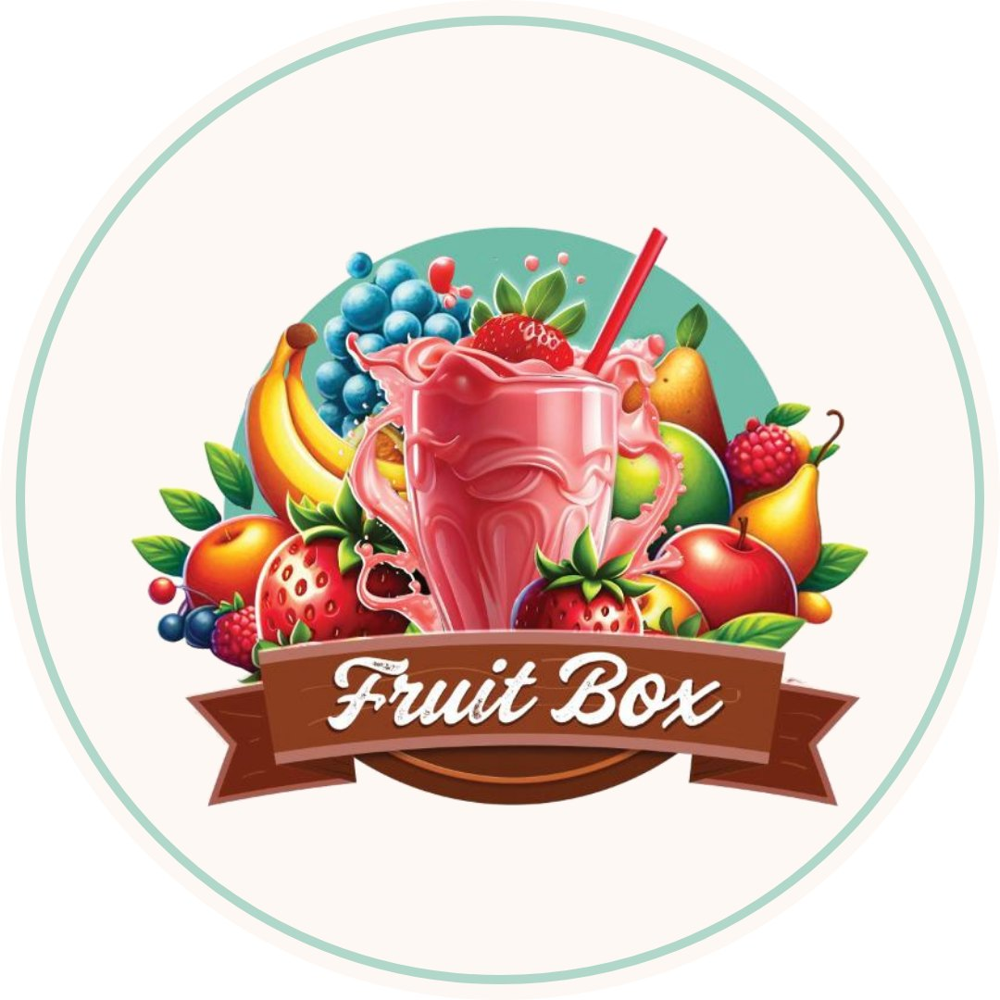
دائرة كريمية، الشعار كاملاً داخلها
رمز مستقل، ليس بديلاً عن الشعار
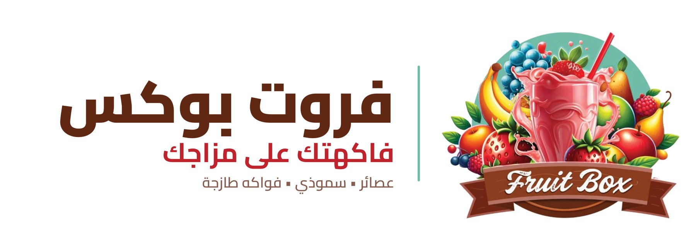
النسخة الأفقية: رسم الشعار متداخل (الشريط يعلو الفواكه)، لذلك لا يمكن فصل الشريط عن الفواكه دون تغيير الرسم. الحل المعتمد: الشعار كاملاً بدون تعديل + كتلة نصية جانبية (الاسم بالعربية «فروت بوكس» والشعار التسويقي). الاسم العربي نقل حرفي مقترح يمكن حذفه.
المساحة الآمنة = x حيث x يساوي ارتفاع الجزء الأوسط من الشريط البني (≈ سُدس ارتفاع الشعار). لا يدخل هذه المساحة أي نص أو صورة أو حافة.
| أصغر عرض رقمي | 120 px |
| أصغر عرض مطبوع | ٣٠ مم (أصغر من ذلك تختفي كتابة الاسم) |
| أقل من ذلك | استخدم أيقونة التطبيق أو الاسم مكتوباً |
| أكبر من ١١ سم مطبوعاً | يتطلب ملفاً عالي الدقة (انظر الملاحظات الفنية) |
✓ أبيض
✓ كريمي
✓ نعناعي فاتح
✓ وردي فاتح
✓ كاكاو + نسخة الداكن
✓ داكن جداً + نسخة الداكن
✗ نعناعي كامل — يتعارض مع الدائرة
✗ أحمر — يطغى على الفاكهة
على الصور الفوتوغرافية: ضع الشعار في منطقة هادئة وغير مزدحمة، واستخدم نسخة الخلفية الداكنة إذا كانت المنطقة داكنة.
لا تمطّ الشعار أو تضغطه
لا تُدِر الشعار
لا تغيّر الألوان
لا تضف مؤثرات أو توهّجاً
لا تضعه على خلفية مزدحمة
لا تقصّ أجزاء من الشعار
لا تستخدم الأصلي على الداكن
لا تصغّره تحت الحد الأدنى
كذلك: لا تُعد كتابة اسم Fruit Box بخط آخر، ولا تضع الشعار التسويقي داخل الشريط، ولا تعد ترتيب الفواكه، ولا تستبدل الشعار بأي رسم مشابه.
| HEX | #8A3D1F |
| RGB | 138 61 31 |
| CMYK≈ | 0 56 78 46 |
| HEX | #602713 |
| RGB | 96 39 19 |
| CMYK≈ | 0 59 80 62 |
| HEX | #71BCA8 |
| RGB | 113 188 168 |
| CMYK≈ | 40 0 11 26 |
| HEX | #C1232C |
| RGB | 193 35 44 |
| CMYK≈ | 0 82 77 24 |
| HEX | #F39A99 |
| RGB | 243 154 153 |
| CMYK≈ | 0 37 37 5 |
| HEX | #FCD82F |
| RGB | 252 216 47 |
| CMYK≈ | 0 14 81 1 |
| HEX | #5F973E |
| RGB | 95 151 62 |
| CMYK≈ | 37 0 59 41 |
| HEX | #FDF8F3 |
| RGB | 253 248 243 |
| CMYK≈ | 0 2 4 1 |
الألوان مستخرجة بالقياس من ملف الشعار (متوسط البكسلات لكل لون). قيم CMYK تقريبية (تحويل رياضي بدون ملف ICC) — اعتمد بروفة طباعة من المطبعة قبل الإنتاج. تباين النص: الكاكاو على الكريمي 11.1:1، الأحمر على الكريمي 5.6:1، النعناعي على الكريمي 2.1:1 (للزخارف والعناوين الكبيرة فقط، لا للنص الصغير).
| العناوين | Black 900 / ExtraBold 800 |
| العناوين الفرعية | Bold 700 |
| النصوص | Regular 400 / SemiBold 600 |
| الاستخدام | الأكواد، العناوين الإلكترونية، المواد ثنائية اللغة |
| الأوزان | 400 / 600 / 700 / 800 |
| الترخيص | الخطّان مجانيان (SIL Open Font License) ومرفقان في مجلد fonts |
اسم Fruit Box داخل الشعار خط يدوي خاص بالرسم الأصلي، ولا يُقلَّد بخط آخر في العناوين.


أكواب سموذي مسطّحة بنفس لغة أيقونة التطبيق، تُستخدم لتمثيل المنتجات عند غياب الصور.
نقاط نعناعية ووردية بشفافية منخفضة، للخلفيات فقط.
شكل الشريط المبسّط يُستخدم كإطار للعناوين والأسعار — بدون نص الشعار.
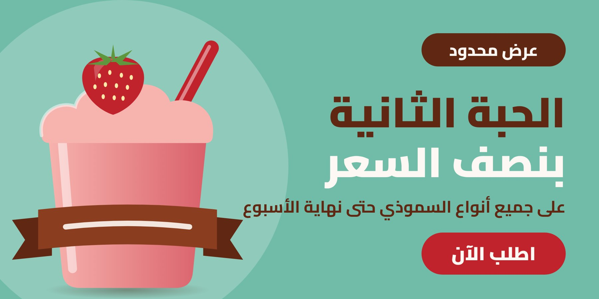
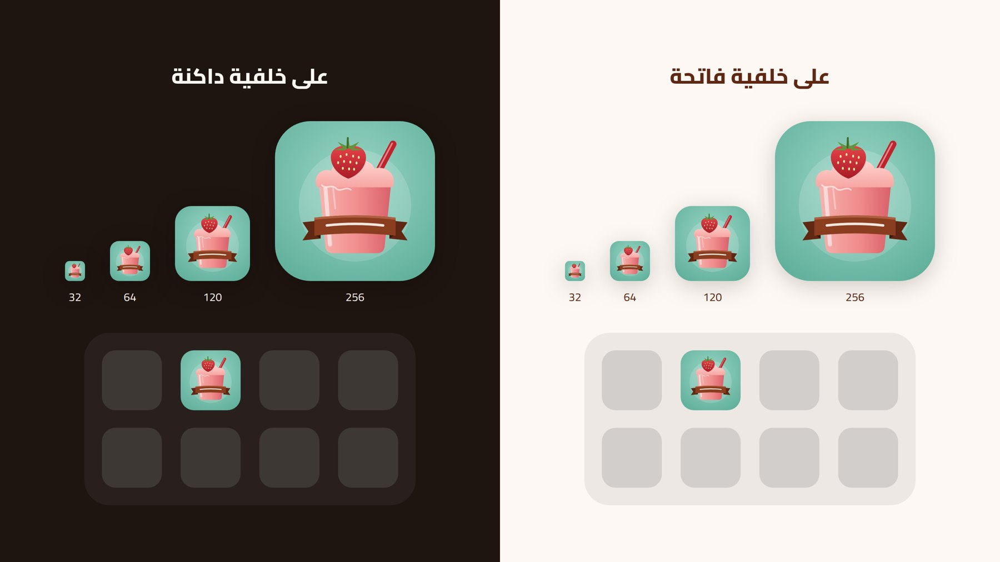
رمز مستقل، مبسّط للأحجام الصغيرة.
مستوحى من عناصر الشعار نفسه: الدائرة النعناعية، كوب السموذي الوردي، الشفاطة الحمراء، حبة الفراولة، والشريط البني — لكنه رسم متجهي جديد مبسّط وليس نسخة مصغّرة من الشعار، ولا يحتوي على نص.
| المصدر | SVG — vector 100% |
| التصدير | 1024 / 512 / 192 / 180 / 48 / 32 px |
| متى يُستخدم | أيقونة التطبيق، المفضلة في المتصفح، الإشعارات، الأختام الصغيرة |
| متى لا يُستخدم | كبديل عن الشعار في اللافتات والتغليف |
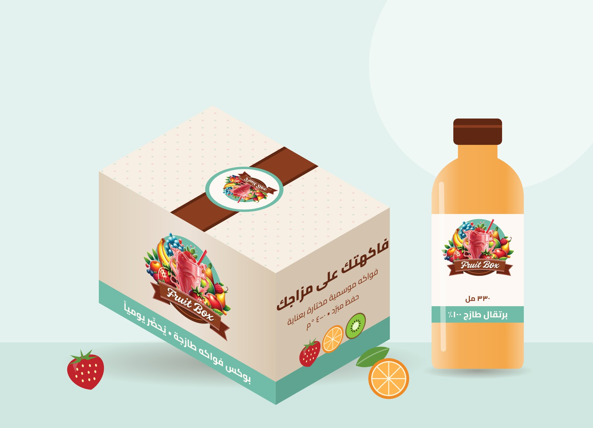
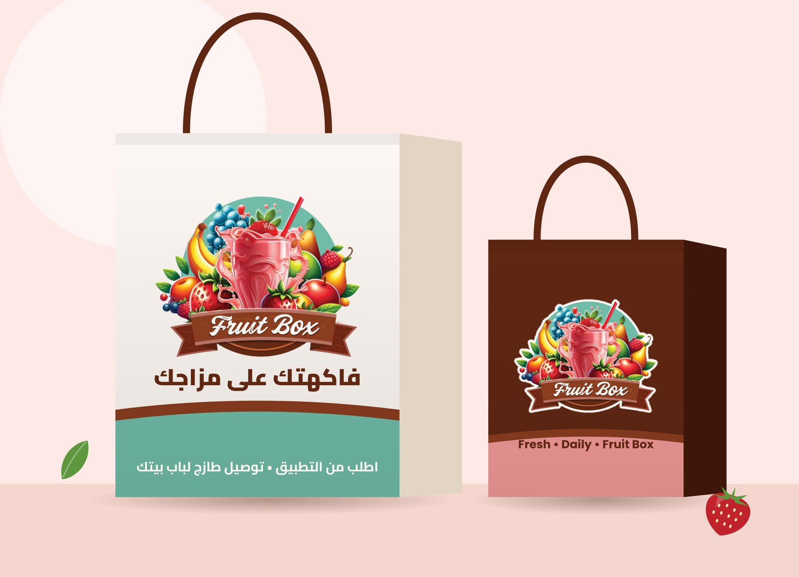
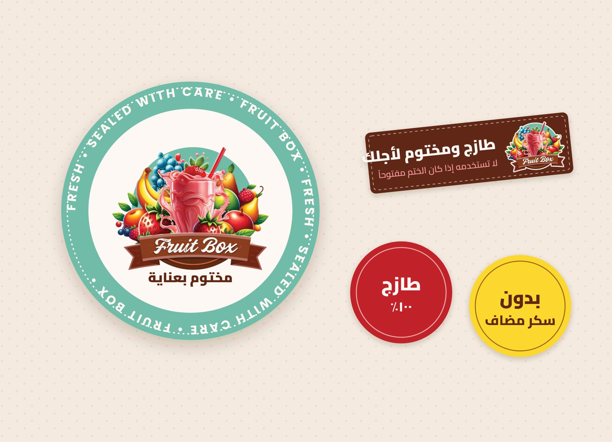
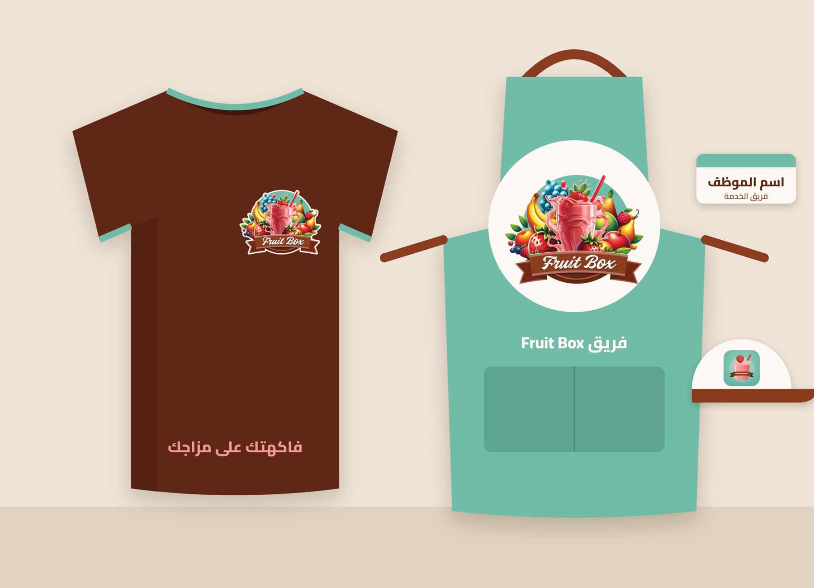
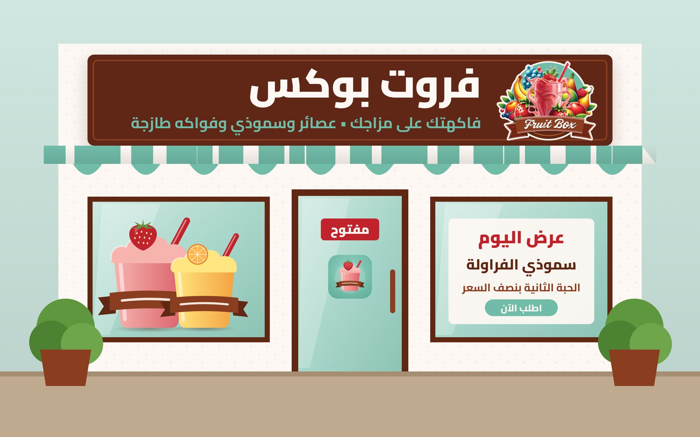
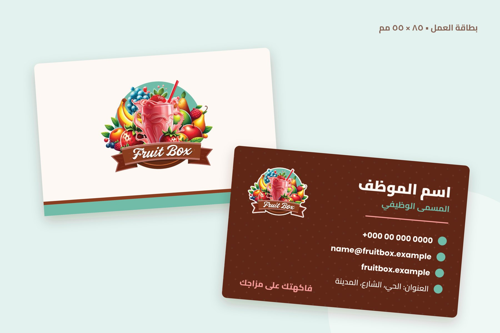
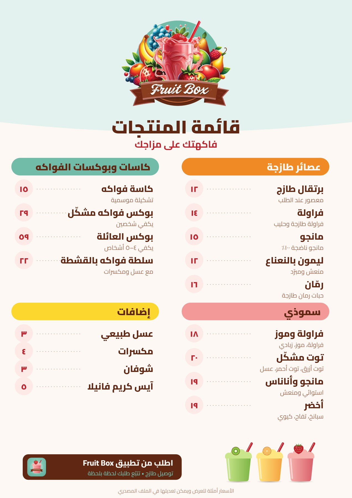
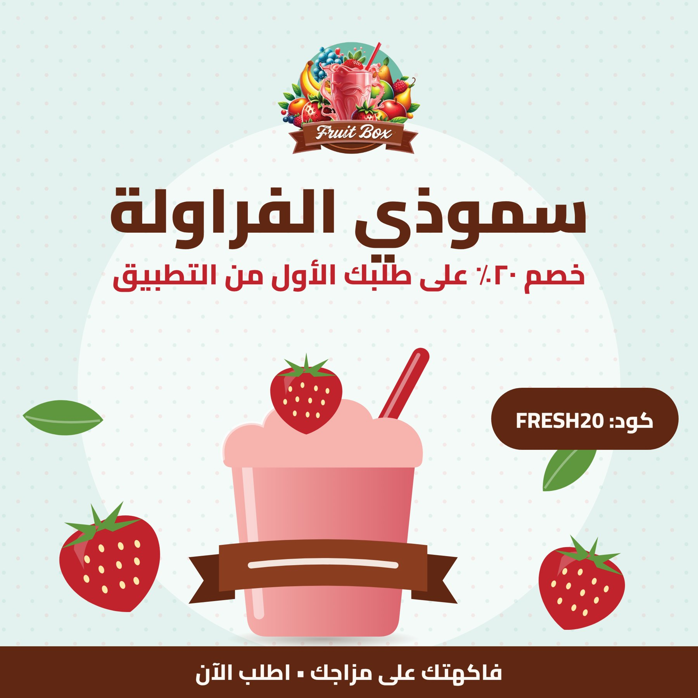
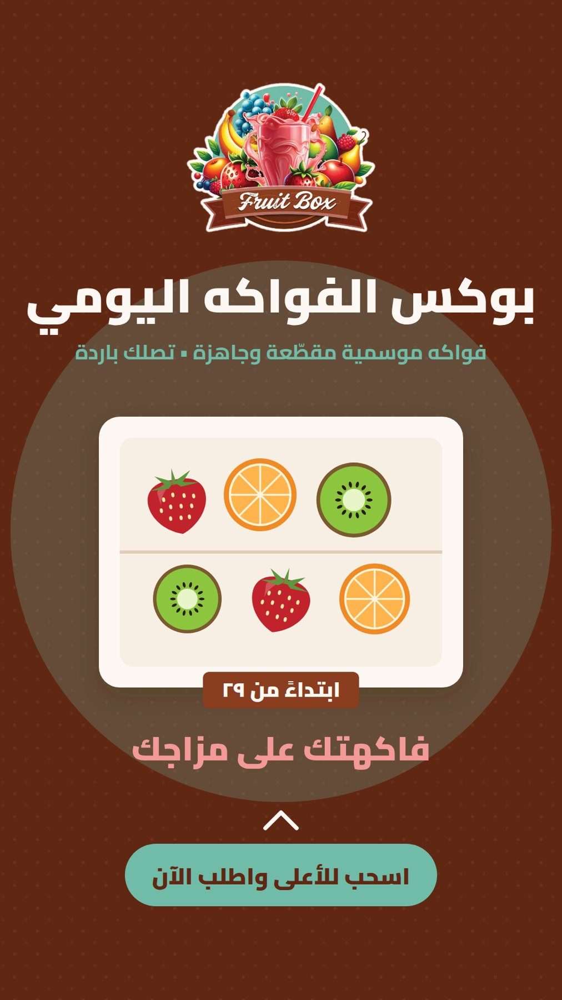
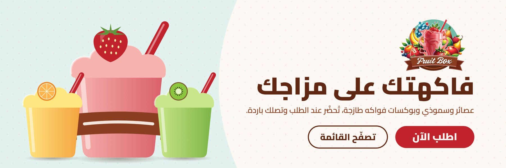
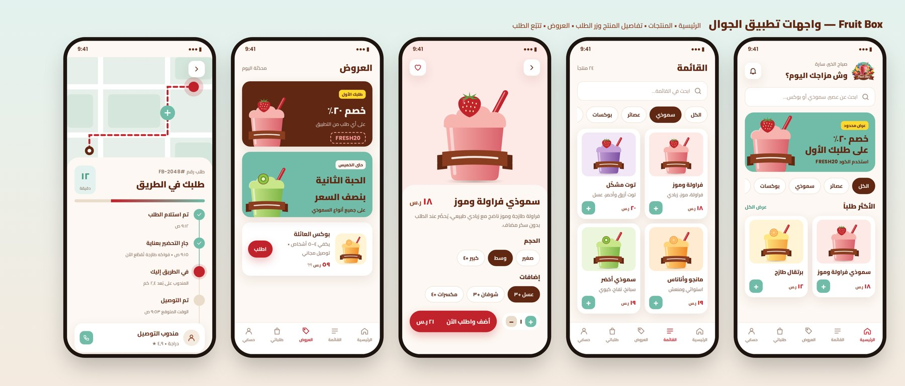
01-logo/ logo versions (PNG) + lockups (SVG) 02-app-icon/ vector icon (SVG) + PNG sizes 03-applications/ 11 designs: editable SVG + PNG 04-digital-ui/ RTL HTML/CSS prototype + PNG 05-brand-guidelines/ this PDF + HTML source fonts/ Cairo, Poppins (OFL) _src/ generator scripts
النصوص والأسعار والأرقام في التصاميم أمثلة قابلة للتعديل. العملة (ر.س) في الواجهة الرقمية مثال فقط.